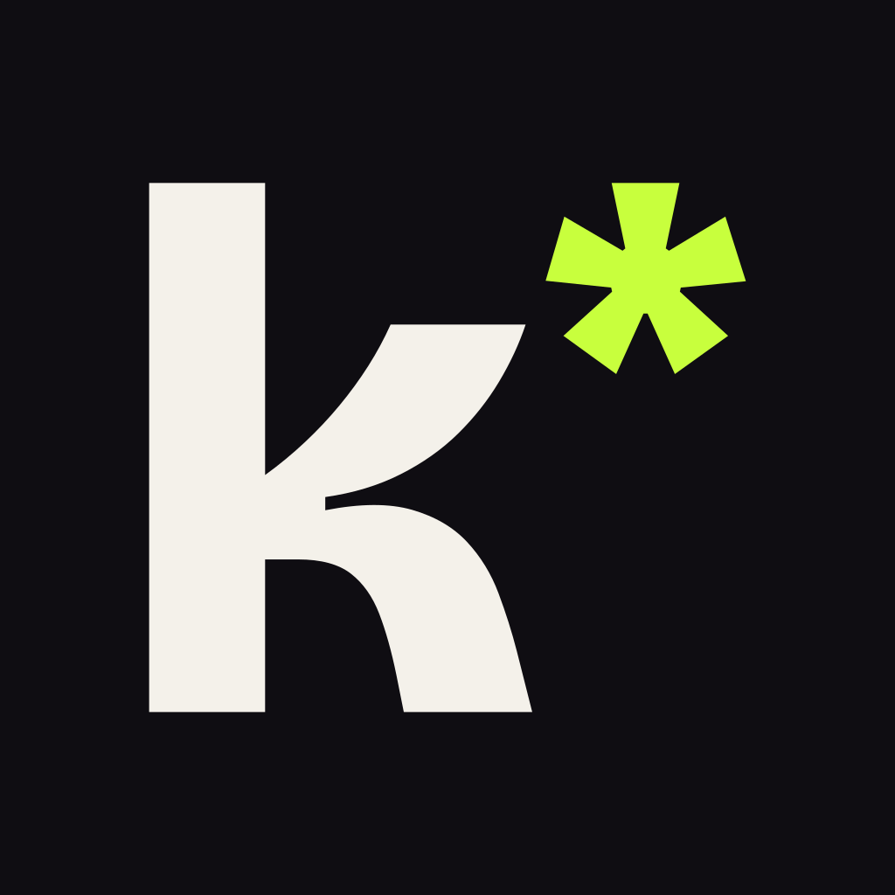

Heel queer Nederland. Deze week.
kweer* zet al het queer uitgaan van Amsterdam, Utrecht, Rotterdam en Den Haag op één scherm: feesten, drag, borrels, sport en meetups. Elke week vers.
Support & contact
Vraag, fout gezien, of een event dat erbij moet of weg moet? Mail info@bepride.nl.
Privacy
Geen account, geen tracking, geen advertenties. Lees de privacyverklaring.